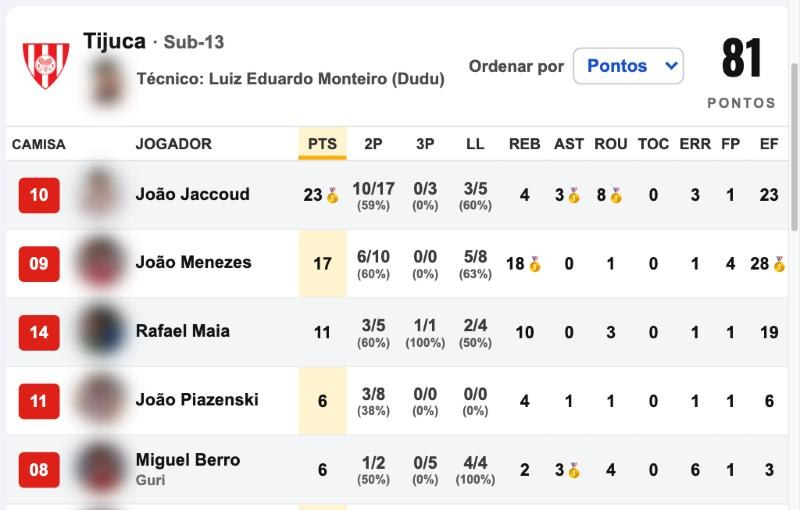
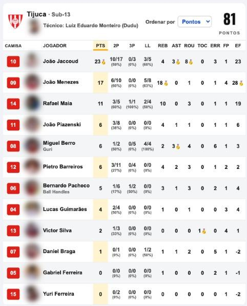
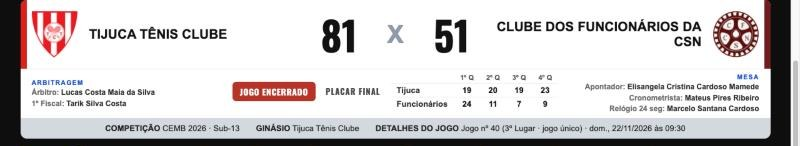

Marque cada ponto, rebote e assistência enquanto narra. A estatística sai ao vivo para o seu público, em 5 a 8 segundos, no aplicativo do seu canal, e entra no maior banco de dados do basquete de base do Brasil.

Você já está na quadra. Com o scout, cada lance que você narra vira número, e esse número vira vitrine para o atleta e para o seu canal.
O público acompanha o placar e os números de cada atleta quase em tempo real: a atualização chega com atraso de apenas 5 a 8 segundos, numa página com a sua marca.
Botões grandes, um toque por lance. Dá para marcar o jogo sem perder o ritmo da narração.
Os atletas inscritos na federação já estão no banco. Você não digita jogador por jogador na hora do jogo.
Pontos, 2P, 3P, lance livre, rebote, assistência, roubo, toco e eficiência. Os destaques do jogo saem calculados.
Área própria dentro do Basquete Brasil com a sua logo e as suas cores, como a página do Klaus TV.
Seu público baixa o aplicativo com a sua logo no celular e acompanha seus jogos e as estatísticas ao vivo com um toque.
Seus jogos entram no calendário e no ranking nacional. Olheiros, clubes e famílias encontram o seu trabalho.
Alguns recortes da tela. O resto você conhece por dentro quando entrar.


Você já narrou jogos e tem as estatísticas guardadas? Elas valem desconto. Funciona assim:
Importante: estatística de jogo que não aconteceu, de jogo fora das federações ou com números que não batem não é aceita, e o desconto não é liberado. Sem estatísticas para enviar, o plano é o normal, sem desconto.
Mensalidade simples, sem fidelidade.
[a confirmar: aparelhos em que o scout funciona]
Só de jogos oficiais de federação estadual, com os campos PTS, 2P, 3P, LL, REB, AST, ROU, TOC, ERR, FP e EF por atleta, e que batam com o resultado oficial.
Sim. Faz parte do acordo de parceiro: as estatísticas aprovadas entram no banco de dados do Basquete Brasil, com o crédito do seu canal.
[a confirmar: regra de cancelamento]